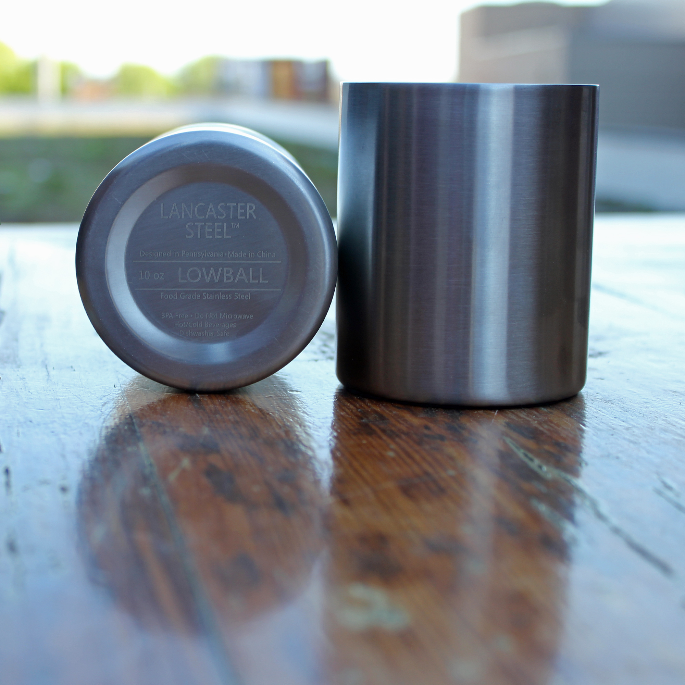
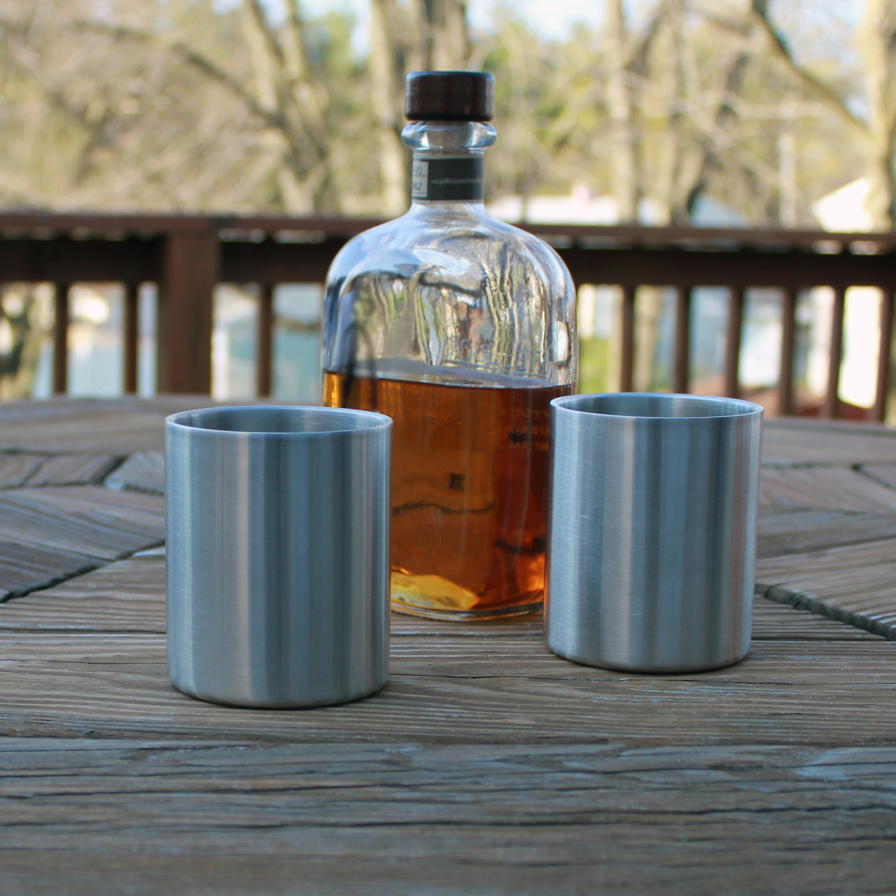
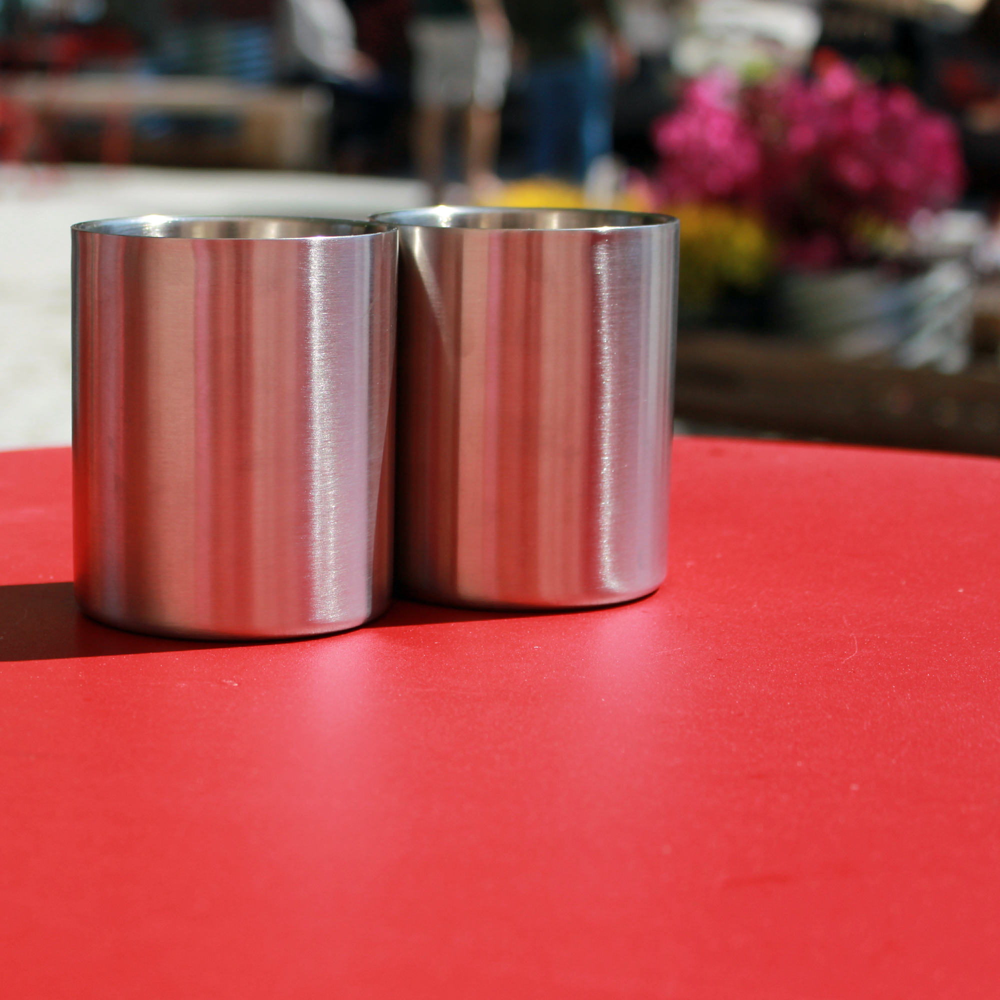

We took the classic 10oz Lowball tumbler and added modern craftsmanship to create the Lancaster Steel Lowball. A stainless steel double-wall insulated 10oz Lowball tumbler, designed to keep your favorite cocktail chilled for up to twice as long as a standard glass tumbler. The Lowball is perfect for any environment from your favorite cigar lounge to relaxing by the water.